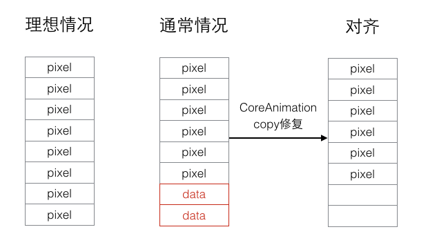

网络图片显示大体步骤:
- 下载图片
- 图片处理（裁剪，边框等)
- 写入磁盘
- 从磁盘读取数据到内核缓冲区
- 从内核缓冲区复制到用户空间(内存级别拷贝)
- 解压缩为位图（耗cpu较高）
- 如果位图数据不是字节对齐的，CoreAnimation会copy一份位图数据并进行字节对齐
- CoreAnimation渲染解压缩过的位图
以上4，5，6，7，8步是在UIImageView的setImage时进行的，所以默认在主线程进行(iOS UI操作必须在主线程执行)。
一些优化思路：
- 异步下载图片
- image解压缩放到子线程
- 使用缓存 (包括内存级别和磁盘级别)
- 存储解压缩后的图片，避免下次从磁盘加载的时候再次解压缩
- 减少内存级别的拷贝 （针对第5点和第7点）
- 良好的接口（比如SDWebImage使用category）
- Core Data vs 文件存储
- 图片预下载
2.1 关于异步图片下载:
fastImageCache主要针对于从磁盘文件读取并展示图片的极端优化，所以并没有集成异步图片下载的功能。这里主要来看看SDWebImage(AFNetWorking的基本类似)的实现方案：
tableView中，异步图片下载任务的管理:
我们知道，tableViewCell是有重用机制的，也就是说，内存中只有当前可见的cell数目的实例，滑动的时候，新显示cell会重用被滑出的cell对象。这样就存在一个问题：
一般情况下在我们会在cellForRow方法里面设置cell的图片数据源，也就是说如果一个cell的imageview对象开启了一个下载任务，这个时候该cell对象发生了重用，新的image数据源会开启另外的一个下载任务，由于他们关联的imageview对象实际上是同一个cell实例的imageview对象，就会发生2个下载任务回调给同一个imageview对象。这个时候就有必要做一些处理，避免回调发生时，错误的image数据源刷新了UI。
SDWebImage提供的UIImageView扩展的解决方案：
imageView对象会关联一个下载列表（列表是给AnimationImages用的，这个时候会下载多张图片），当tableview滑动，imageView重设数据源（url）时，会cancel掉下载列表中所有的任务，然后开启一个新的下载任务。这样子就保证了只有当前可见的cell对象的imageView对象关联的下载任务能够回调，不会发生image错乱。
同时，SDWebImage管理了一个全局下载队列（在DownloadManager中）,并发量设置为6.也就是说如果可见cell的数目是大于6的，就会有部分下载队列处于等待状态。而且，在添加下载任务到全局的下载队列中去的时候，SDWebImage默认是采取LIFO策略的，具体是在添加下载任务的时候，将上次添加的下载任务添加依赖为新添加的下载任务。1
2
3
4
5
6[wself.downloadQueue addOperation:operation];
if (wself.executionOrder == SDWebImageDownloaderLIFOExecutionOrder) {
// Emulate LIFO execution order by systematically adding new operations as last operation's dependency
[wself.lastAddedOperation addDependency:operation];
wself.lastAddedOperation = operation;
}
所以在运行SDWebImage的demo的时候，可以看到，如果快速滑下去，然后又滑回来的话，图片是过了一会才显示出来，这是因为快速滑动的时候，旧数据源的下载任务被取消掉了。
另外一种解决方案是：
imageView对象和图片的url相关联，在滑动时，不取消旧的下载任务，而是在下载任务完成回调时，进行url匹配，只有匹配成功的image会刷新imageView对象，而其他的image则只做缓存操作，而不刷新UI。
同时，仍然管理一个执行队列，为了避免占用太多的资源，通常会对执行队列设置一个最大的并发量。此外，为了保证LIFO的下载策略，可以自己维持一个等待队列，每次下载任务开始的时候，将后进入的下载任务插入到等待队列的前面。
iOS异步任务一般有3种实现方式:
- NSOperationQueue
- GCD
- NSThread
这几种方式就不细说了，SDWebImage是通过自定义NSOperation来抽象下载任务的，并结合了GCD来做一些主线程与子线程的切换。具体异步下载的实现，AFNetworking与SDWebImage都是十分优秀的代码，有兴趣的可以深入看看源码。2.2 关于图片解压缩:
图片来源 针对app自带的图片，xcode在编译的时候会对png图片进行优化（据说是通过pngcrush这个开源的工具来优化），这样在显示的时候就会有一些比较好的体验。 对于从internet上面下载的图片，多数情况下，是需要做解压缩后，才能渲染到屏幕上的。
通用的解压缩方案
主体的思路是在子线程，将原始的图片渲染成一张的新的可以字节显示的图片，来获取一个解压缩过的图片
基本上比较流行的一些开源库都先后支持了在异步线程完成图片的解压缩，并对解压缩过后的图片进行缓存。
这么做的优点是在setImage的时候系统省去了上面的第6步，缺点就是图片占用的空间变大。
比如1张5050像素的图片，在retina的屏幕下所占用的空间为`100 100 * 4 ~ 40KB`
下面的代码是SDWebImage的解决方案:1
2
3
4
5
6
7
8
9
10
11
12
13
14
15
16
17
18
19
20
21
22
23
24
25
26
27
28
29
30
31
32
33
34
35
36
37
38
39
40
41
42
43
44
45
46
47
48
49
50
51
52
53
54
55
56+ (UIImage *)decodedImageWithImage:(UIImage *)image {
if (image.images) {
// Do not decode animated images
return image;
}
CGImageRef imageRef = image.CGImage;
CGSize imageSize = CGSizeMake(CGImageGetWidth(imageRef), CGImageGetHeight(imageRef));
CGRect imageRect = (CGRect){.origin = CGPointZero, .size = imageSize};
CGColorSpaceRef colorSpace = CGColorSpaceCreateDeviceRGB();
CGBitmapInfo bitmapInfo = CGImageGetBitmapInfo(imageRef);
int infoMask = (bitmapInfo & kCGBitmapAlphaInfoMask);
BOOL anyNonAlpha = (infoMask == kCGImageAlphaNone ||
infoMask == kCGImageAlphaNoneSkipFirst ||
infoMask == kCGImageAlphaNoneSkipLast);
// CGBitmapContextCreate doesn't support kCGImageAlphaNone with RGB.
// https://developer.apple.com/library/mac/#qa/qa1037/_index.html
if (infoMask == kCGImageAlphaNone && CGColorSpaceGetNumberOfComponents(colorSpace) > 1) {
// Unset the old alpha info.
bitmapInfo &= ~kCGBitmapAlphaInfoMask;
// Set noneSkipFirst.
bitmapInfo |= kCGImageAlphaNoneSkipFirst;
}
// Some PNGs tell us they have alpha but only 3 components. Odd.
else if (!anyNonAlpha && CGColorSpaceGetNumberOfComponents(colorSpace) == 3) {
// Unset the old alpha info.
bitmapInfo &= ~kCGBitmapAlphaInfoMask;
bitmapInfo |= kCGImageAlphaPremultipliedFirst;
}
// It calculates the bytes-per-row based on the bitsPerComponent and width arguments.
CGContextRef context = CGBitmapContextCreate(NULL,
imageSize.width,
imageSize.height,
CGImageGetBitsPerComponent(imageRef),
0,
colorSpace,
bitmapInfo);
CGColorSpaceRelease(colorSpace);
// If failed, return undecompressed image
if (!context) return image;
CGContextDrawImage(context, imageRect, imageRef);
CGImageRef decompressedImageRef = CGBitmapContextCreateImage(context);
CGContextRelease(context);
UIImage *decompressedImage = [UIImage imageWithCGImage:decompressedImageRef scale:image.scale orientation:image.imageOrientation];
CGImageRelease(decompressedImageRef);
return decompressedImage;
}
2.3 关于字节对齐
SDWebImage与AFNetworking都没有对第7点做优化，FastImageCache相对与其他的开源库，则对第5点与第7点做了优化。这里我们谈谈第七点，关于图片数据的字节对齐。
Core Animation在某些情况下渲染前会先拷贝一份图像数据，通常是在图像数据非字节对齐的情况下会进行拷贝处理，官方文档没有对这次拷贝行为作说明，模拟器和Instrument里有高亮显示“copied images”的功能，但似乎它有bug，即使某张图片没有被高亮显示出渲染时被copy，从调用堆栈上也还是能看到调用了CA::Render::copy_image方法：
那什么是字节对齐呢，按我的理解，为了性能，底层渲染图像时不是一个像素一个像素渲染，而是一块一块渲染，数据是一块块地取，就可能遇到这一块连续的内存数据里结尾的数据不是图像的内容，是内存里其他的数据，可能越界读取导致一些奇怪的东西混入，所以在渲染之前CoreAnimation要把数据拷贝一份进行处理，确保每一块都是图像数据，对于不足一块的数据置空。大致图示：(pixel是图像像素数据，data是内存里其他数据)
块的大小应该是跟CPU cache line有关，ARMv7是32byte，A9是64byte，在A9下CoreAnimation应该是按64byte作为一块数据去读取和渲染，让图像数据对齐64byte就可以避免CoreAnimation再拷贝一份数据进行修补。FastImageCache做的字节对齐就是这个事情。

从代码上来看，主要是在创建上图解码的过程中，CGBitmapContextCreate函数的bytesPerRow参数必须传64的倍数。
比较各个开源框架的代码，可以看到SDWebImage与AFNetworking的该参数都传的是0，即让系统自动来计算该值（那为何系统自动计算的时候不让图片数据字节就字节对齐呢？）。
2.4 关于第3，4点，内存级别拷贝
以上3个开源库中，FastImageCache对这一点做了很大的优化，其他的2个开源库则未关注这一点。这一块木有深入研究，就引用一下FastImageCache团队对该点的一些说明。有能力的可以去看看原文章(英文): here
内存映射
平常我们读取磁盘上的一个文件，上层API调用到最后会使用系统方法read()读取数据，内核把磁盘数据读入内核缓冲区，用户再从内核缓冲区读取数据复制到用户内存空间，这里有一次内存拷贝的时间消耗，并且读取后整个文件数据就已经存在于用户内存中，占用了进程的内存空间。FastImageCache采用了另一种读写文件的方法，就是用mmap把文件映射到用户空间里的虚拟内存，文件中的位置在虚拟内存中有了对应的地址，可以像操作内存一样操作这个文件，相当于已经把整个文件放入内存，但在真正使用到这些数据前却不会消耗物理内存，也不会有读写磁盘的操作，只有真正使用这些数据时，也就是图像准备渲染在屏幕上时，虚拟内存管理系统VMS才根据缺页加载的机制从磁盘加载对应的数据块到物理内存，再进行渲染。这样的文件读写文件方式少了数据从内核缓存到用户空间的拷贝，效率很高
2.5 关于第二步图片处理（裁剪，边框等）
一般情况下，对于下载下来的图片我们可能想要做一些处理，比如说做一些缩放，裁剪，或者添加圆角等等。
对于比较通用的缩放，或者圆角等功能，可以集成到控件本身。不过，提供一个接口出来，让使用者能够有机会对下载下来的图片做一些其他的特殊处理是有必要的。
1 | /** SDWebImage |
2.6 其他（诸如图片预下载，gif支持等等,下载进度条）
待补充
- 常用的开源库对比
| tip | SDWebImage | AFNetworking | FastImageCache |
|---|---|---|---|
| 异步下载图片 | YES | YES | NO |
| 子线程解压缩 | YES | YES | YES |
| 子线程图片处理(缩放，圆角等) | YES | YES | YES |
| 存储解压缩后的位图 | YES | YES | YES |
| 内存级别缓存 | YES | YES | YES |
| 磁盘级别缓存 | YES | YES | YES |
| UIImageView category | YES | NO | NO |
| 减少内存级别的拷贝 | NO | NO | YES |
| 接口易用性 | * | * | * |
参考资料
FastImageCache-github
SDWebImage-github
AFNetworking-github
File System vs Core Data: the image cache test
iOS image caching. Libraries benchmark (SDWebImage vs FastImageCache)
Avoiding Image Decompression Sickness
iOS图片加载速度极限优化—FastImageCache解析